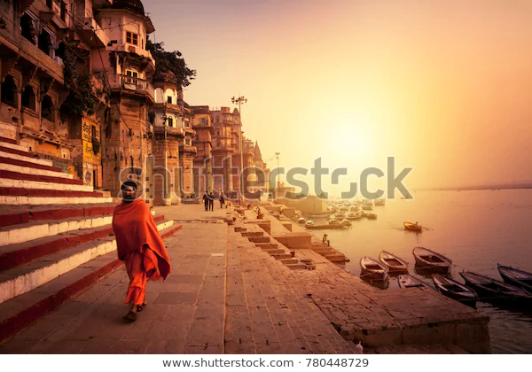
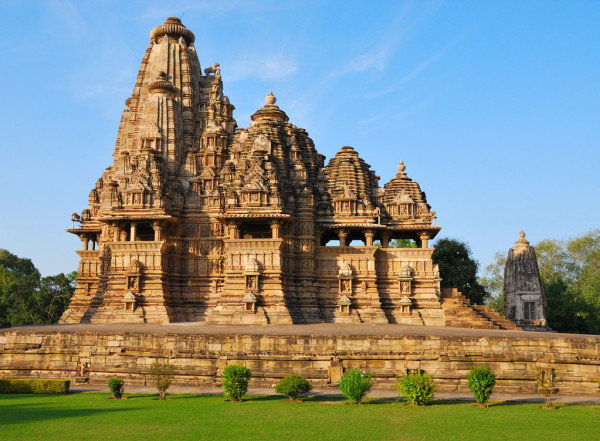
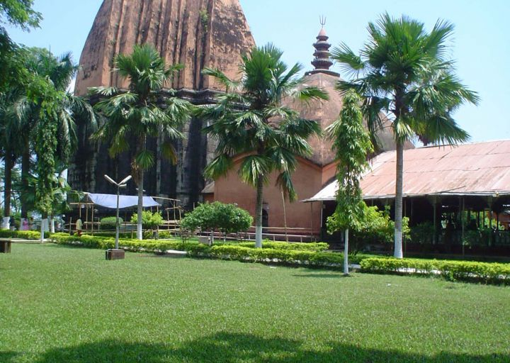

1.AMBER FORT

The Amer Fort, situated in Amber, 11 kilometers from Jaipur, is one of the most famous forts of Rajasthan. Amer, originally, was the capital of the state before Jaipur. It is an old fort, built in 1592 by Raja Man Singh. This fort is also very popularly known as the Amer Palace.Mughal architecture greatly influenced the architectural style of several buildings of the fort.[8][9][10] Constructed of red sandstone and marble, the attractive, opulent palace is laid out on four levels, each with a courtyard. It consists of the Diwan-e-Aam, or "Hall of Public Audience", the Diwan-e-Khas, or "Hall of Private Audience", the Sheesh Mahal (mirror palace), or Jai Mandir, and the Sukh Niwas where a cool climate is artificially created by winds that blow over a water cascade within the palace. Hence, the Amer Fort is also popularly known as the Amer Palace.[5] The palace was the residence of the Rajput Maharajas and their families. At the entrance to the palace near the fort's Ganesh Gate, there is a temple dedicated to Shila Devi, a goddess of the Chaitanya cult, which was given to Raja Man Singh when he defeated the Raja of Jessore, Bengal in 1604. (Jessore is now in Bangladesh).[4][11][12] Raja Man Singh had 12 queens so he made 12 rooms, one for each Queen. Each room had a staircase connected to the King’s room but the Queens were not to go upstairs. Raja Jai Singh had only one queen so he built one room equal to three old queen’s rooms.
2. QUTUB MINAR

The Qutub Minar is a towering 73 meter high tower built by Qutub-ud-Din Aibak in 1193. The tower was built to celebrate Muslim dominance in Delhi after the defeat of Delhi’s last Hindu ruler. This tower is the highest tower in India, complete with five storeys and projecting balconies. The first three storeys of the Qutub Minar are made of red sandstone and the last two are made of marble and sandstone. The construction of the Qutub Minar was started by Qitub-ud-Din Aibak, but he only constructed the basement. The construction of the tower was later taken over by his successor Iltutmish who constructed three more stories. The last two storeys were completed Firoz Shah Tuglak. The different architectural styles from the time of Aibak to Tuglak are clearly visible in the Qutub Minar. Apart from the tower, the Qutub Minar complex comprises of the Quwwat-us-Islam Mosque (the first mosque to be built in India), a 7 metre high iron pillar, the tomb of Iltutmish, Ala’i-Darwaza and the Ala’I Minar.
3. TAJ MAHAL

The Taj Mahal (/ˌtɑːdʒ məˈhɑːl, ˌtɑːʒ-/;[4] lit. 'Crown of the Palace', [taːdʒ ˈmɛːɦ(ə)l])[5] is an ivory-white marble mausoleum on the southern bank of the river Yamuna in the Indian city of Agra. It was commissioned in 1632 by the Mughal emperor Shah Jahan (reigned from 1628 to 1658) to house the tomb of his favourite wife, Mumtaz Mahal; it also houses the tomb of Shah Jahan himself. The tomb is the centrepiece of a 17-hectare (42-acre) complex, which includes a mosque and a guest house, and is set in formal gardens bounded on three sides by a crenellated wall. Construction of the mausoleum was essentially completed in 1643, but work continued on other phases of the project for another 10 years. The Taj Mahal complex is believed to have been completed in its entirety in 1653 at a cost estimated at the time to be around 32 million rupees, which in 2020 would be approximately 70 billion rupees (about U.S. $916 million). The construction project employed some 20,000 artisans under the guidance of a board of architects led by the court architect to the emperor, Ustad Ahmad Lahauri.
4. GOLDEN TEMPLE

The Gurdwara is built around a man-made pool (sarovar) that was completed by the fourth Sikh Guru, Guru Ram Das in 1577.[5][6] Guru Arjan, the fifth Guru of Sikhism, requested Sai Mir Mian Mohammed, a Muslim Pir of Lahore, to lay its foundation stone in 1589.[7] In 1604, Guru Arjan placed a copy of the Adi Granth in Harmandir Sahib, calling the site Ath Sath Tirath (lit. "shrine of 68 pilgrimages").[2][8] The Gurdwara was repeatedly rebuilt by the Sikhs after it became a target of persecution and was destroyed several times by the Mughal and invading Afghan armies. [2][4][9] Maharaja Ranjit Singh after founding the Sikh Empire, rebuilt it in marble and copper in 1809, overlaid the sanctum with gold foil in 1830. This has led to the name the Golden Temple.[10][11][12]
5. VARANASI HISTORICAL CITY
{kind=link}
Varanasi is one of the oldest continuously inhabited cities in the world. Its early history is that of the first Aryan settlement in the middle Ganges valley. By the 2nd millennium BCE, Varanasi was a seat of Aryan religion and philosophy and was also a commercial and industrial centre famous for its muslin and silk fabrics, perfumes, ivory works, and sculpture. Varanasi was the capital of the kingdom of Kashi during the time of the Buddha (6th century BCE), who gave his first sermon nearby at Sarnath. The city remained a centre of religious, educational, and artistic activities as attested by the celebrated Chinese Buddhist pilgrim Xuanzang, who visited it in about 635 CE and said that the city extended for about 3 miles (5 km) along the western bank of the Ganges.
1.AMBER FORT
The Amer Fort, situated in Amber, 11 kilometers from Jaipur, is one of the most famous forts of Rajasthan. Amer, originally, was the capital of the state before Jaipur. It is an old fort, built in 1592 by Raja Man Singh. This fort is also very popularly known as the Amer Palace.Mughal architecture greatly influenced the architectural style of several buildings of the fort.[8][9][10] Constructed of red sandstone and marble, the attractive, opulent palace is laid out on four levels, each with a courtyard. It consists of the Diwan-e-Aam, or "Hall of Public Audience", the Diwan-e-Khas, or "Hall of Private Audience", the Sheesh Mahal (mirror palace), or Jai Mandir, and the Sukh Niwas where a cool climate is artificially created by winds that blow over a water cascade within the palace. Hence, the Amer Fort is also popularly known as the Amer Palace.[5] The palace was the residence of the Rajput Maharajas and their families. At the entrance to the palace near the fort's Ganesh Gate, there is a temple dedicated to Shila Devi, a goddess of the Chaitanya cult, which was given to Raja Man Singh when he defeated the Raja of Jessore, Bengal in 1604. (Jessore is now in Bangladesh).[4][11][12] Raja Man Singh had 12 queens so he made 12 rooms, one for each Queen. Each room had a staircase connected to the King’s room but the Queens were not to go upstairs. Raja Jai Singh had only one queen so he built one room equal to three old queen’s rooms.
2. QUTUB MINAR
The Qutub Minar is a towering 73 meter high tower built by Qutub-ud-Din Aibak in 1193. The tower was built to celebrate Muslim dominance in Delhi after the defeat of Delhi’s last Hindu ruler. This tower is the highest tower in India, complete with five storeys and projecting balconies. The first three storeys of the Qutub Minar are made of red sandstone and the last two are made of marble and sandstone. The construction of the Qutub Minar was started by Qitub-ud-Din Aibak, but he only constructed the basement. The construction of the tower was later taken over by his successor Iltutmish who constructed three more stories. The last two storeys were completed Firoz Shah Tuglak. The different architectural styles from the time of Aibak to Tuglak are clearly visible in the Qutub Minar. Apart from the tower, the Qutub Minar complex comprises of the Quwwat-us-Islam Mosque (the first mosque to be built in India), a 7 metre high iron pillar, the tomb of Iltutmish, Ala’i-Darwaza and the Ala’I Minar.
3. TAJ MAHAL
The Taj Mahal (/ˌtɑːdʒ məˈhɑːl, ˌtɑːʒ-/;[4] lit. 'Crown of the Palace', [taːdʒ ˈmɛːɦ(ə)l])[5] is an ivory-white marble mausoleum on the southern bank of the river Yamuna in the Indian city of Agra. It was commissioned in 1632 by the Mughal emperor Shah Jahan (reigned from 1628 to 1658) to house the tomb of his favourite wife, Mumtaz Mahal; it also houses the tomb of Shah Jahan himself. The tomb is the centrepiece of a 17-hectare (42-acre) complex, which includes a mosque and a guest house, and is set in formal gardens bounded on three sides by a crenellated wall. Construction of the mausoleum was essentially completed in 1643, but work continued on other phases of the project for another 10 years. The Taj Mahal complex is believed to have been completed in its entirety in 1653 at a cost estimated at the time to be around 32 million rupees, which in 2020 would be approximately 70 billion rupees (about U.S. $916 million). The construction project employed some 20,000 artisans under the guidance of a board of architects led by the court architect to the emperor, Ustad Ahmad Lahauri.
4. GOLDEN TEMPLE
The Gurdwara is built around a man-made pool (sarovar) that was completed by the fourth Sikh Guru, Guru Ram Das in 1577.[5][6] Guru Arjan, the fifth Guru of Sikhism, requested Sai Mir Mian Mohammed, a Muslim Pir of Lahore, to lay its foundation stone in 1589.[7] In 1604, Guru Arjan placed a copy of the Adi Granth in Harmandir Sahib, calling the site Ath Sath Tirath (lit. "shrine of 68 pilgrimages").[2][8] The Gurdwara was repeatedly rebuilt by the Sikhs after it became a target of persecution and was destroyed several times by the Mughal and invading Afghan armies. [2][4][9] Maharaja Ranjit Singh after founding the Sikh Empire, rebuilt it in marble and copper in 1809, overlaid the sanctum with gold foil in 1830. This has led to the name the Golden Temple.[10][11][12]
5. VARANASI HISTORICAL CITY
Varanasi is one of the oldest continuously inhabited cities in the world. Its early history is that of the first Aryan settlement in the middle Ganges valley. By the 2nd millennium BCE, Varanasi was a seat of Aryan religion and philosophy and was also a commercial and industrial centre famous for its muslin and silk fabrics, perfumes, ivory works, and sculpture. Varanasi was the capital of the kingdom of Kashi during the time of the Buddha (6th century BCE), who gave his first sermon nearby at Sarnath. The city remained a centre of religious, educational, and artistic activities as attested by the celebrated Chinese Buddhist pilgrim Xuanzang, who visited it in about 635 CE and said that the city extended for about 3 miles (5 km) along the western bank of the Ganges.
6. KHAJURAHO TEMPLE
{kind=link}
The Khajuraho group of monuments was built during the rule of the Chandela dynasty. The building activity started almost immediately after the rise of their power, throughout their kingdom to be later known as Bundelkhand.[10] Most temples were built during the reigns of the Hindu kings Yashovarman and Dhanga. Yashovarman's legacy is best exhibited by the Lakshmana Temple. Vishvanatha temple best highlights King Dhanga's reign.[11]:22 The largest and currently most famous surviving temple is Kandariya Mahadeva built in the reign of King Vidyadhara.[12] The temple inscriptions suggest many of the currently surviving temples were complete between 970 and 1030 AD, with further temples completed during the following decades.[7] The Khajuraho temples were built about 35 miles from the medieval city of Mahoba,[13] the capital of the Chandela dynasty, in the Kalinjar region. In ancient and medieval literature, their kingdom has been referred to as Jijhoti, Jejahoti, Chih-chi-to and Jejakabhukti.[14] Khajuraho was mentioned by Abu Rihan-al-Biruni, the Persian historian who accompanied Mahmud of Ghazni in his raid of Kalinjar in 1022 CE; he mentions Khajuraho as the capital of Jajahuti.[15] The raid was unsuccessful, and a peace accord was reached when the Hindu king agreed to pay a ransom to Mahmud of Ghazni to end the attack and leave.[14]
7. SANCHI STUPA

The Great Stupa at Sanchi is one of the oldest stone structures in India, and an important monument of Indian Architecture.[1] It was originally commissioned by the emperor Ashoka in the 3rd century BCE. Its nucleus was a simple hemispherical brick structure built over the relics of the Buddha. It was crowned by the chhatri, a parasol-like structure symbolising high rank, which was intended to honour and shelter the relics. The original construction work of this stupa was overseen by Ashoka, whose wife Devi was the daughter of a merchant of nearby Vidisha. Sanchi was also her birthplace as well as the venue of her and Ashoka's wedding. In the 1st century BCE, four elaborately carved toranas (ornamental gateways) and a balustrade encircling the entire structure were added. The Sanchi Stupa built during Mauryan period was made of bricks. The composite flourished until the 11th century.
8. HELIODORUS PILLAR

The Heliodorus pillar is a stone column that was erected around 113 BCE in central India[1] in Besnagar (near Vidisha, Madhya Pradesh). The pillar is named after Heliodorus, an ambassador of the Indo-Greek king Antialcidas from Taxila, who made a dedication inscribed in Brahmi script on the pillar, declaring himself to be a devotee of Vāsudeva, the Deva deva or "God of Gods", the Supreme Deity.[2][3][4][5] The Heliodorus pillar, joining earth, space and heaven, is thought to symbolize the "cosmic axis" and express the cosmic totality of the Deity.[2] The Heliodorus pillar site is located near the confluence of two rivers, about 60 kilometres (37 mi) northeast from Bhopal, 11 kilometres (6.8 mi) from the Buddhist stupa of Sanchi, and 4 kilometres (2.5 mi) from the Hindu Udayagiri site.[6] The pillar was discovered by Alexander Cunningham in 1877. Two major archaeological excavations in the 20th-century have revealed the pillar to be a part of an ancient Vāsudeva temple site.[3][7][8] The temple and the inscriptions are among the earliest known evidence of Vāsudeva-Krishna devotion and early Vaishnavism in India,[9][10][11][12][5] and one of the earliest surviving records of a western convert to Vaishnavism.[13][5] Alternatively, making dedications to foreign gods was only a logical practice for the Greeks, intended to appropriate their local power, and this cannot be regarded as a "conversion" to Hinduism.[14]
9. SIBSAGAR
{kind=link}
Sibsagar is a historically important part of Assam, lying East of Jorhat. Being the capital of the former rulers, the Ahoms, it has had a major impact in the culture. It is a town of decorated monuments and temples.Sibsagar gets the attention of history enthusiasts who've looked to understand the East of India better. It has also played a significant role in Indian history and therefore is an important destination for historical tourism. A few architectural marvels at Sibsagar are the Talatal Ghar, Rang Ghar and the Rangpur Palace.
10. Madan Kamdev

Barely 40 kms. away from the sprawling metropolis Guwahati, on N.H. 52 Madan Kamdev is an enigma, a mystery, a marvel and in the words of Omar Khayam, "a veil past which I could not see". Very little is known about the origin of this magnificient archaeological ruins. Written history is almost silent on it, leaving wide room for conjectures and hypothesis. The ruins of Madan Kamdev scattered over a hillock dates back to the 9th and 10th centuries. Remnants of 12 temples were discovered here 35 years ago. Apart from Hindu deities, the ruins have erotic sculptures akin to Khajuraho in central India’s Madhya Pradesh state.
11. KAILASH PARWAT

In his Tibetan-English dictionary, Chandra (1902: p. 32) identifies the entry for 'kai la sha' (Wylie: kai la sha) which is a loan word from Sanskrit.[4] The Tibetan name for the mountain is Gang Rinpoche (Tibetan: གངས་རིན་པོ་ཆེ་; simplified Chinese: 冈仁波齐峰; traditional Chinese: =岡仁波齊峰). Gang or Kang is the Tibetan word for snow peak analogous to alp or hima; rinpoche is an honorific meaning "precious one" so the combined term can be translated "precious jewel of snows". Alice Albinia lists some of the names for the mountain, and its religious significance to various faiths: "Tibetan Buddhists call it Kangri Rinpoche; 'Precious Snow Mountain'. Bon texts have many names: Water's Flower, Mountain of Sea Water, Nine Stacked Swastika Mountain. For Hindus, it is the home of the Hindu god Shiva and it is believed that Shiva resides there; for Jains it is where their first leader was enlightened; for Buddhists, the navel of the universe; and for adherents of Bon, the abode of the sky goddess Sipaimen."[5]